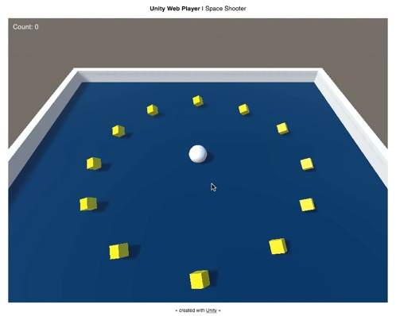
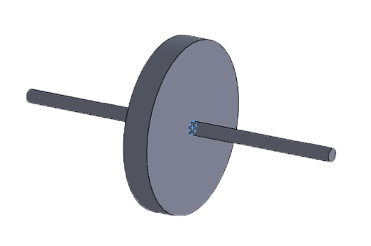

Introduction to Gyro-Roller Based Rehabilitation For Stroke Patients
Tulakan Ruangrong
AIM LAB - Biomedical Engineering - Mahidol University
Department of Biomedical Engineering
- Faculty of Engineering, Mahidol University
- Laboratories
- Center for Biomedical and Robotics Technology (BART LAB)
- Brain Computer Interface (BCI LAB)
- Smart Motion and Rehabilitation Technology (SMART LAB)
- Cardiovascular Engineering and Artificial Organs Lab (CardioArt LAB)
- Neuro - Exploration Technology Laboratory (NEXT LAB)
- Artificial Intelligence in Medicine (AIM LAB)
- Biopolymers and Nanoengineering For Drug Delivery and Molecular Imaging (BioNEDD LAB)
- Micro Total Analysis System (μTAS LAB)
- Cell and Tissue Manipulation (CTM LAB)
BART LAB
BCI LAB
BioNEDD LAB
CTM LAB
Aim Lab

Computer Aided Diagnosis

Thai Therapeutic Robots

Advanced Rehabilitation System
Aim Lab
Computer Aided Diagnosis (CAD)
IM-AIM (IMage and Artificial Intelligence in Medicine)
Aim Lab
Thai Therapeutic Robots (TTR)


Chang-Tam, Chang-Phood and Chang-Kui Robots
Aim Lab
Advanced Rehabilitation System (ARS)

Gyro-Roller Rehabilitation Device
Advanced Rehabilitation System

Smart Grip
Gyro-Roller System
Smart Grip
Games developed for Smart Grip
Subject being trained with the device
Gyro-Roller System
Introduction
Stroke
- Around 150,000 cases and 20,000 deaths in Thailand every year
- One of the major cause of paralytic
- Most of the survivors need rehabilitation

Ischemic stroke
Hemorrhagic stroke
Transient ischemic stroke
Introduction
Rehabilitation
- Recover the affected muscles
- Most of commercial devices are expensive
- Easy to be motiveless and bored
- Virtual reality based rehabilitation was introduced
Bi-Manu-Track
ARMEO®SPRING
ARMEO®SPRING
Gyro-Roller
Gyroscopic Effect

Virtual Reality
Gyro-Roller
Difference between 2nd and 3rd version

Version 2 wheel
 Version 3 wheel
Version 3 wheel
Development
Hardware


- Gyro-Roller
- Electrical Controller
- Computer
Software
Game development uses Unity3D Game Engine
Gyro-Roller
How it works?
Basically, the available rotation axes are Yaw and Roll
Thesis Objectives
Create virtual reality games based on Gyro-Roller system
Design games based on muscles activation
Clinical Trial
Related Data
Electromyogram (EMG)
Log data from games
Clinical trial assessments
Electromyogram (EMG)
Tasks
- Claim that gyroscopic effect is effective
- Investigate the difference between 2nd and 3rd version
The table summarize the activation of each muscle group in different moving actions
Electromyogram (EMG)
Raw EMG data

Example EMG plots
Games Log data
Raw game log data
Graphs show log data from the game
Occupational Therapy Assessments
The assessment forms that have been use such as:
- Fugl-Meyer Assessment for Upper Extremity (FMUE)
- Spasticity for Upper Extremity
- Hand Function
Mostly the assessments are done before and after training, but sometimes there can be an assessment after half-way of training.
The assessment scores from occupational therapist